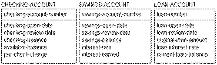
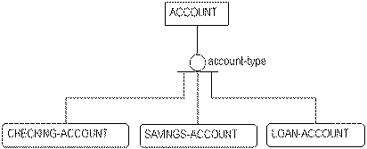
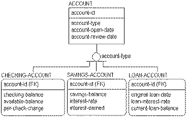

A subtype relationship, also referred to as a generalization category, generalization hierarchy, or inheritance hierarchy, is a way to group a set of entities that share common characteristics. For example, you might find during a modeling effort that several different types of ACCOUNTs exist in a bank such as checking, savings, and loan accounts, as shown in the figure below:

When you recognize similarities among the different independent entities, you may be able to collect attributes common to all three types of accounts into a hierarchical structure.
You can move these common attributes into a higher level entity called the supertype entity (or generalization entity). Those that are specific to the individual account types remain in the subtype entities. In this example, you can create a supertype entity called ACCOUNT to represent the information that is common across the three types of accounts. The supertype ACCOUNT includes a primary key of �account-number.�
Three subtype entities, CHECKING-ACCOUNT, SAVINGS-ACCOUNT, and LOAN-ACCOUNT, are added as dependent entities that are related to ACCOUNT using a subtype relationship.
The result is a structure like the one shown in the figure below:

In this figure, an ACCOUNT is either a CHECKING-ACCOUNT, a SAVINGS-ACCOUNT, or a LOAN-ACCOUNT. Each subtype entity is an ACCOUNT and inherits the properties of ACCOUNT. The three different subtype entities of ACCOUNT are mutually exclusive.
In order to distinguish one type of ACCOUNT from another, you can add the attribute �account-type� as the subtype discriminator. The subtype discriminator is an attribute of the category supertype (ACCOUNT) and its value will tell you which type of ACCOUNT it is.
Once you have established the subtype relationship, you can examine each attribute in the original model, in turn, to determine if it should remain in the subtype entities, or move to the supertype. For example, each subtype entity has an �open-date.� If the definitions of these three kinds of �open-date� are the same, you can move them to the supertype, and drop them from the subtype entities.
You must analyze each attribute in turn to determine if it remains in the subtype entity or moves to the supertype entity. In those cases where a single attribute appears in only some of the subtype entities, you face a more difficult decision. You can either leave the attribute with the subtype entities or move the attribute up to the supertype. If this attribute appears in the supertype, the value of the attribute in the supertype will be NULL when the attribute is not included in the corresponding subtype entity.
After analysis, the resulting model might appear as follows:

When developing a subtype relationship, you must also be aware of any specific business rules that you need to impose at the subtype level that are not pertinent to other subtypes of the supertype. For example, LOAN accounts are deleted after they reach a zero balance. You would not want to delete CHECKING and SAVINGS accounts under the same conditions.
There can also be relationships that are meaningful to a single subtype and not to any other subtype in the hierarchy. For example, the LOAN entity needs to be examined, to ensure that any previous relationships to records of customer payments or assets are not lost because of a different organizational structure.